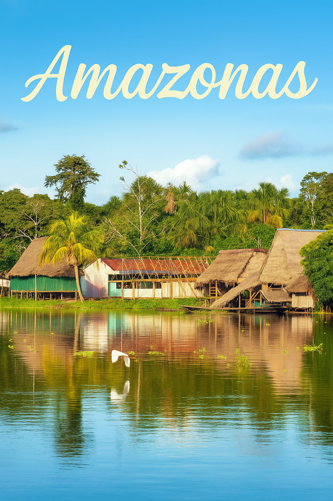
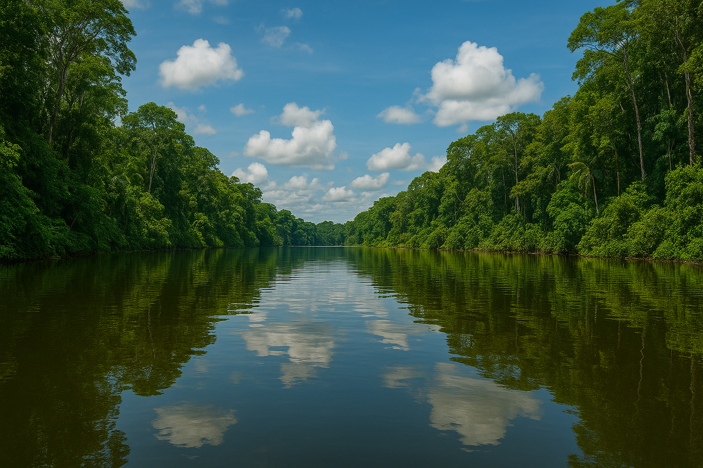
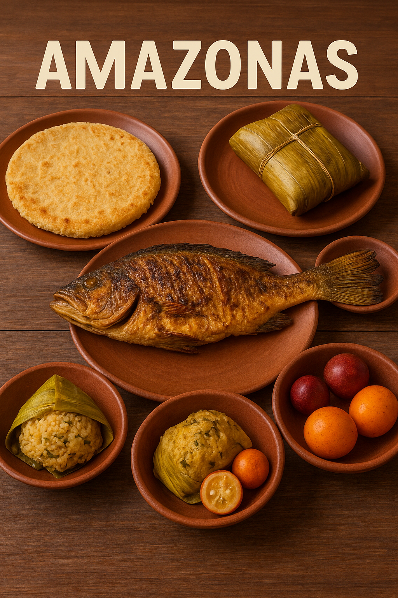

Departamento

Sitios turísticos

- Parque Nacional Natural Amacayacu
- Isla de los Micos
- Puerto Nariño
- Río Amazonas
- Reserva Natural Tanimboca
Comida típica

- Pescado de río asado
- Casabe de yuca
- Juane amazónico
- Frutas exóticas: copoazú, arazá, camu camu
Información económica
La economía del Amazonas se centra en la pesca, la agricultura tradicional,
el turismo ecológico y la artesanía indígena.
- Turismo: 35% del empleo
- Pesca: 25% del empleo
- Agricultura: 20% del empleo
- Artesanías: 10% del empleo
- Servicios: 10% del empleo
Volver al mapa